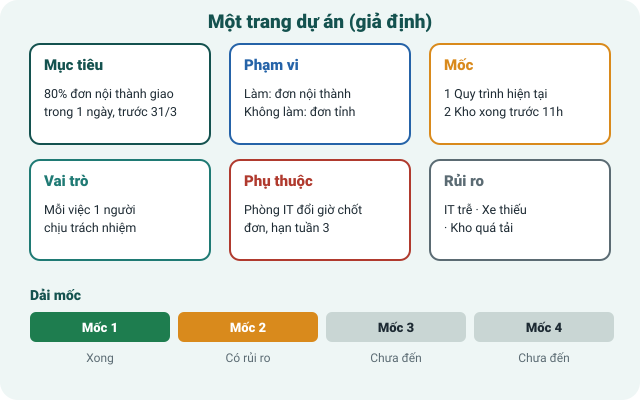

K5 · Lập kế hoạch và giữ cam kết công việc › Bậc 4 Thành thạo
Quản lý một dự án nhỏ trên một trang giấy
Bài này làm Tờ 6: Một trang dự án. Mẫu in. Bài nối tiếp Sắp ưu tiên khi nhiều việc (Bậc 3) và Đề xuất cải tiến (Bậc 3).
1. Mục tiêu
- Lập một trang dự án: mục tiêu đo được, phạm vi, 3–5 mốc, vai trò, 3 rủi ro chính.
- Chạy buổi cập nhật tuần 15 phút và đánh dấu việc phụ thuộc bộ phận khác.
2. Khởi động truy xuất
- Bốn nấc giao việc khi kèm cặp là gì?
- Câu phản hồi theo hành vi có ba phần nào?
Đáp án
- Làm mẫu; làm cùng; quan sát; tự làm.
- Điều thấy được; tác động; gợi ý lần sau.
Xem lại: Kèm cặp đồng nghiệp.
3. Giải thích
Senior hay được giao dự án nhỏ: 3–6 người, vài tuần đến vài tháng. Không cần phần mềm phức tạp. Một trang giấy làm tốt là đủ.
Một trang dự án có 6 ô:
- Mục tiêu: một câu, có số đo và ngày. Ví dụ: "giảm thời gian giao hàng nội thành từ 2 ngày còn 1 ngày, trước 31/3".
- Phạm vi: ghi cả điều làm và điều không làm. Ô "không làm" chặn việc phình ra.
- Mốc: 3–5 mốc, mỗi mốc là một kết quả nhìn thấy được, không phải một hoạt động.
- Vai trò: mỗi việc có đúng một người chịu trách nhiệm. Ghi thêm ai duyệt, ai góp ý, ai được báo.
- Phụ thuộc: việc nào cần bộ phận khác làm trước? Ai ở đó, hạn khi nào?
- Rủi ro: 3 rủi ro lớn nhất, mỗi rủi ro có dấu hiệu sớm và cách đối phó.

Thử nhỏ trước khi làm lớn. Dự án cải tiến nên có một mốc thử nghiệm. Làm ở một ca, một cửa hàng hay một tuyến trước. Đo kết quả. Rồi mới mở rộng.
Cập nhật tuần 15 phút. Mỗi người trả lời ba câu: xong gì, tuần tới làm gì, đang vướng gì. Việc vướng được ghi lại và xử lý sau buổi họp, chỉ với người liên quan.
Buổi cập nhật tuần, 15 phút
- Xem dải mốcXanh: đúng hạn. Cam: có rủi ro. Đỏ: trễ.
- Mỗi người 3 câuXong gì, tuần tới, đang vướng gì.
- Phụ thuộcBộ phận khác đã làm phần của họ chưa?
- Cập nhật trangGửi lại trong ngày.
Khi một mốc có nguy cơ trễ, báo sớm. Đưa người có quyền ba lựa chọn: lùi hạn, bớt phạm vi, hoặc thêm nguồn lực.
4. Ví dụ tại nơi làm việc Việt Nam
Tình huống giả định. Anh Khánh là chuyên viên vận hành chính ở một công ty thương mại điện tử tại TP.HCM. Anh được giao dự án giao hàng nội thành trong 1 ngày, nhóm 5 người, 10 tuần.
Anh viết mục tiêu: 80% đơn nội thành giao trong 1 ngày, trước 31/3. Ô "không làm": không đổi đơn vị vận chuyển, không làm cho đơn tỉnh.
Bốn mốc. Mốc 1: bản đồ quy trình hiện tại. Mốc 2: kho xử lý đơn trước 11 giờ. Mốc 3: thử ở 2 quận trong 3 tuần. Mốc 4: mở rộng toàn thành phố.
Phụ thuộc: phòng IT phải đổi giờ chốt đơn trên hệ thống. Anh gặp trưởng phòng IT ngay tuần đầu, chốt hạn tuần 3.
Tuần 4, buổi cập nhật cho thấy mốc 2 trễ. IT mới làm xong một nửa. Anh báo giám đốc ba lựa chọn. Giám đốc chọn bớt phạm vi: thử ở 1 quận trước.
Cuối tuần 10, 76% đơn ở quận thử giao trong 1 ngày. Anh báo đúng số đó, kèm kế hoạch đạt 80%.
Vì sao cách này tốt: ô "không làm" giữ dự án gọn. Phụ thuộc được chốt sớm. Khi trễ, anh báo sớm và đưa lựa chọn. Kết quả được báo đúng sự thật.
5. Thực hành
Tình huống giả định. Bạn là y tá điều dưỡng trưởng nhóm ở khoa nội một bệnh viện tại Nghệ An. Bạn được giao dự án 8 tuần: giảm thời gian chờ làm thủ tục ra viện. Hiện trung bình 3 giờ. Việc in giấy ra viện phụ thuộc phòng kế hoạch tổng hợp. Thanh toán phụ thuộc phòng tài chính.
Viết mục tiêu đo được, một dòng "không làm", 3 mốc, 2 phụ thuộc và 1 rủi ro có dấu hiệu sớm.
Gợi ý 1
Mốc là kết quả nhìn thấy được. "Họp với phòng tài chính" là hoạt động. "Phòng tài chính chốt quy trình thanh toán trước 10 giờ" là kết quả.
Gợi ý 2
Ô "không làm" có thể là phần mềm mới, hoặc các khoa khác.
Lời giải mẫu
- Mục tiêu: thời gian chờ ra viện trung bình dưới 1,5 giờ ở khoa nội, trong tuần 8.
- Không làm: không đổi phần mềm bệnh viện, không áp dụng cho khoa khác trong giai đoạn này.
- Mốc: (1) đo thời gian từng bước của 30 ca ra viện, tuần 2; (2) chốt quy trình mới với hai phòng, tuần 4; (3) thử 3 tuần và đo lại, tuần 8.
- Phụ thuộc: phòng kế hoạch tổng hợp in giấy ra viện trước 10 giờ; phòng tài chính mở thêm quầy giờ cao điểm.
- Rủi ro: bác sĩ ký y lệnh ra viện muộn. Dấu hiệu sớm: quá 9 giờ chưa có danh sách ra viện. Đối phó: thống nhất với trưởng khoa giờ ký trước 8 giờ 30.
(Số liệu là giả định.)
6. Tự kiểm tra
Chọn đáp án. Mỗi lựa chọn đều có giải thích.
Câu 1. Dòng nào là một mốc tốt?
-
Chưa đúng. Đây là hoạt động. Họp xong vẫn có thể chưa có kết quả gì.
-
Đúng. Đúng. Mốc là kết quả nhìn thấy được, có hạn, nên biết đã đạt hay chưa.
-
Chưa đúng. Không đo được và không có kết quả cụ thể.
Câu 2. Vì sao trang dự án cần ô "không làm"?
-
Đúng. Đúng. Ghi rõ điều không làm giúp cả nhóm và người giao việc hiểu cùng một phạm vi.
-
Chưa đúng. Phạm vi vẫn đổi được, nhưng phải có người có quyền quyết và điều chỉnh hạn.
-
Chưa đúng. Mỗi người thường hiểu phạm vi một kiểu. Viết ra mới thống nhất được.
Câu 3. Một việc có ba người cùng "chịu trách nhiệm". Rủi ro là gì?
-
Chưa đúng. Nhiều người cùng chịu trách nhiệm thường dẫn tới mỗi người chờ người khác.
-
Đúng. Đúng. Mỗi việc nên có đúng một người chịu trách nhiệm, người khác góp ý hoặc hỗ trợ.
-
Chưa đúng. Trách nhiệm chia đều thường là trách nhiệm không của ai.
Câu 4. Tuần 5, bạn thấy mốc 3 sẽ trễ 2 tuần. Bạn nên làm gì?
-
Chưa đúng. Báo muộn làm người quyết mất cơ hội điều chỉnh.
-
Đúng. Đúng. Báo sớm kèm lựa chọn giúp người quyết hành động kịp.
-
Chưa đúng. Có thể gây quá tải, và người giao việc không biết rủi ro thật.
7. Phản tư
- Dự án gần nhất của bạn bị phình ra vì đâu? Ô "không làm" có giúp được không?
- Việc phụ thuộc nào hay làm bạn trễ nhất? Bạn có thể chốt nó sớm hơn thế nào?
8. Áp dụng thật
Trong 7 ngày tới, chọn một dự án hoặc một việc lớn bạn đang làm. Làm Tờ 6. Gửi cho người giao việc và hỏi: "Anh chị thấy phạm vi và mốc thế này đúng chưa?"
9. Siêu dữ liệu
| skill | K5 · Lập kế hoạch và giữ cam kết công việc |
|---|---|
| level | Bậc 4 · Thành thạo |
| group | N4 |
| framework_map | CSfW: 3a Plan and organise; SkillsFuture CCS: Self Management; Creative Thinking; NACE: Professionalism; WEF: Creative thinking; EntreComp: Planning and management (chỉ dẫn chiếu) |
| updated | 2026-11-14 |
Hoàn thành bài
Đánh dấu đã học để site gợi ý lịch ôn sau 1, 3 và 7 ngày. Dữ liệu chỉ lưu trên máy của bạn.
Lịch ôn gợi ý: